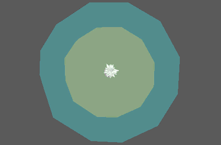

这是一种多线程模拟节点，通过将对象附加到大量点来模拟簇拥和群集行为。
注： 作为模拟节点，飞行要求将“播放速度”(Playback Speed)设置为“播放每一帧”(Play every frame)。开始帧和结束帧也应该是整数。
主控制
-
分离强度(Separation Strength)
- 设置确定的点如何与“分离区域”(Separation Zone)内的其他点分离。
-
对齐强度(Alignment Strength)
- 设置确定的点如何朝与“对齐区域”(Alignment Zone)内的其他点相同的方向移动。
-
粘合强度(Cohesion Strength)
- 设置确定的点如何聚集在一起。
-
搜索距离(Search Distance)
- 确定点之间的可见距离。
-
配套数量(Number of Companions)
- 相对于计算粘合、对齐等行为时点最近的相邻数。
-
视野(Field of Vision)
- 点之间的可见角度（以度为单位）。
-
对齐区域(Alignment Zone)
- 尝试根据“对齐强度”(Alignment Strength)将自身与同一区域内的其他点对齐的每个点周围的区域。
-
分离区域(Separation Zone)
- 尝试根据“分离强度”(Separation Strength)将自身与同一区域内的其他点分离的每个点周围的区域。
速度和质量
-
最小速度(Minimum Speed)、最大速度(Maximum Speed)
- 控制点的速度。
-
转向力(Steering Force)
- 控制使点可以更改方向的力。较小的值会导致移动敏捷快速，而较大的值会导致猛扑过度。
-
旋转转向(Rotational Steering)
-
抑制点自行定向到其当前移动方向的能力。值越小转向越迅速，值越大转向越平滑稳定。
-
旋转阈值(Rotational Threshold)
-
确定触发重定向之前点必须移动的距离。
-
质量(Mass)
- 控制每个点的质量。可用于扩大基于质量的计算。
-
质量变化(Mass Variance)
- 将随机化发生器应用于“质量”(Mass)。
-
强度(Strength)
- 同时减弱对所有点的节点效果。
-
随机强度(Random Strength)
- 按随机顺序平滑地减弱所有点的节点效果。
-
阶跃强度(Step Strength)
- 每次禁用一个点的节点效果。
重力和惯性
这将确定飞行模拟的总体空间边界。
-
重力作用强度(Gravitate Strength)
- 确定“重力类型”(Type of Gravitation)对点的影响程度。值越大，构造越紧密。
-
重力作用距离(Gravitate Distance)
- 根据“重力类型”(Type of Gravitation)，确定允许点漫步的距离。值越小，构造越紧密。
-
重力类型(Type of Gravitation)
- 确定点在其周围受重力作用的区域。“位置”(Location)指定场景中的特定位置（指定为浮动框），而“组中心”(Group Centre)使用所有点的中心。
-
指定位置(Given Location)
- “重力类型”(Type of Gravitation)设置为“位置”(Location)时，是指重心。
-
惯性(Inertia)
- 对所有点施加恒定作用力。
-
重心(Centre of Gravity)
- “重力类型”(Type of Gravitation)设置为“位置”(Location)时，指定连接的定位器以表示重心。
渐变
包含各种可用于远距离影响相应属性强度的渐变。
视图控件
可用于更改视口中显示的诊断显示内容。
-
显示类型(Display Type)
- 确定在视口中显示的内容表示什么。选项包括：
- 法线(Normal)：显示“对齐区域”(Alignment Zone)（绿色）和“分离区域”(Separation Zone)（蓝色）
- 吸引器(Attractor)：显示“吸引器搜索距离”(Attractor Search Distance)
- 障碍(Obstacle)：显示“障碍物搜索距离”(Obstacle Search Distance)
- Predator：显示“Predator 搜索距离”(Predator Search Distance)
- Prey：显示“Prey 搜索距离”(Prey Search Distance)
- 无(None)
-
点 ID(Point ID)
- 确定 MASH 网络中的哪个点以当前的“显示类型”(Display Type)为中心。
吸引器控件
可用于将场景中的对象指定为 MASH 网络会转向的吸引器。
-
吸引强度(Attraction Strength)
- 吸引向量的倍增，用于确定点转向吸引器的难度。
-
吸引器搜索距离(Attractor Search Distance)
- 绕每个点可以看到吸引器的半径。
-
到达模式(Arrival Mode)
- 使点在到达吸引器时停止移动。
-
到达阈值(Arrival Threshold)
- 确定陷入停滞的点间距。
-
到达变化(Arrival Variance)
- 逐点应用于“到达阈值”(Arrival Threshold)的随机化发生器。
-
到达阻尼(Arrival Dampening)
- 设置对象在到达吸引器时将减慢速度的附加阻尼区域。
障碍控件
可用于将场景中的对象指定为障碍（点会尝试避开此障碍）。
-
回避类型(Avoidance Type)
- 确定点为避开障碍而表现出的行为。
-
障碍强度(Obstacle Strength)
- 回避向量的倍增，用于确定点尝试避开障碍的难度。
-
障碍物搜索距离(Obstacle Search Distance)
- 绕每个点可以看到障碍的半径。
-
连接障碍(Connect Obstacle)
- 连接要用作障碍的对象。可以使用“创建障碍定位器”(Create Obstacle Locator)创建表示障碍的定位器，或者通过“连接障碍网格”(Connect Obstacle Mesh)使用场景中的特定对象。
Predator/Prey 控件
可用于将特定点指定为 Predator，并将其他点指定为 Prey。Predator 追逐 Prey，而 Prey 主动回避 Predator。
-
Predator 强度(Predator Strength)
- Predator 向量的倍增，用于确定 Predator 追逐 Prey 的难度。
-
Predator 搜索距离(Predator Search Distance)
- 绕每个 Predator 可以看到 Prey 的半径。
-
Prey 强度(Prey Strength)
- Predator 向量的倍增，用于确定 Prey 回避 Predator 的难度。
-
Prey 搜索距离(Prey Search Distance)
- 绕每个 Prey 可以看到 Predator 的半径。
网格跟随
可用于将点约束到网格，从而确保点保留在其曲面上。
-
输入网格(Input Mesh)
- 显示点将约束到的当前输入网格。可以使用鼠标中键将现有网格拖入此场，或者单击鼠标右键连接选定网格。
场
会影响模拟的动力学场。
-
场(Fields)
- 显示影响模拟的当前场。可以使用鼠标中键将现有网格拖入此场，或者单击鼠标右键连接选定网格。
初始状态
-
输入网格(Input Mesh)
- 显示对应于驱动飞行模拟初始状态的 MASH 网络的 Waiter 节点。可以使用鼠标中键将现有网格拖入此场，或者单击鼠标右键连接选定网格。